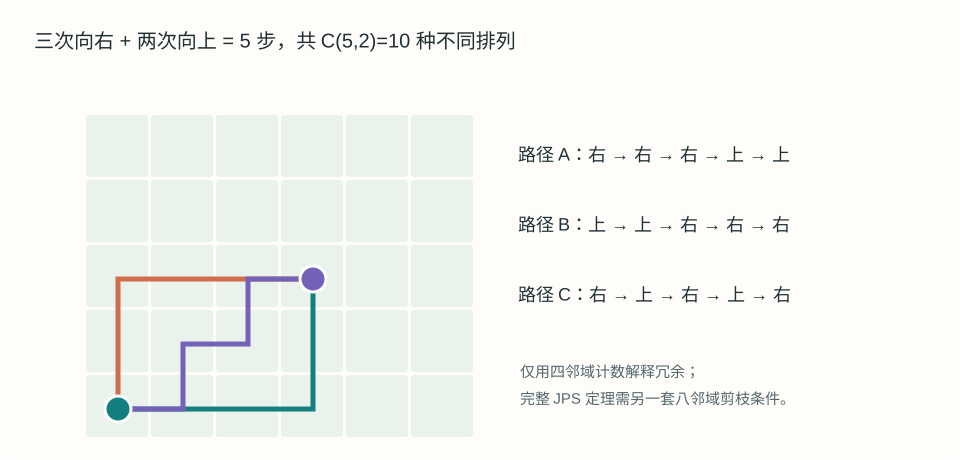
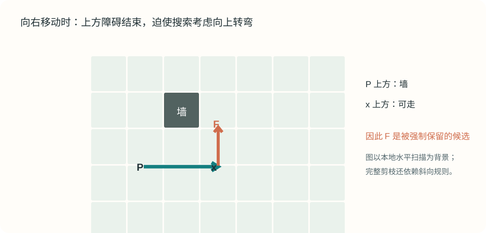
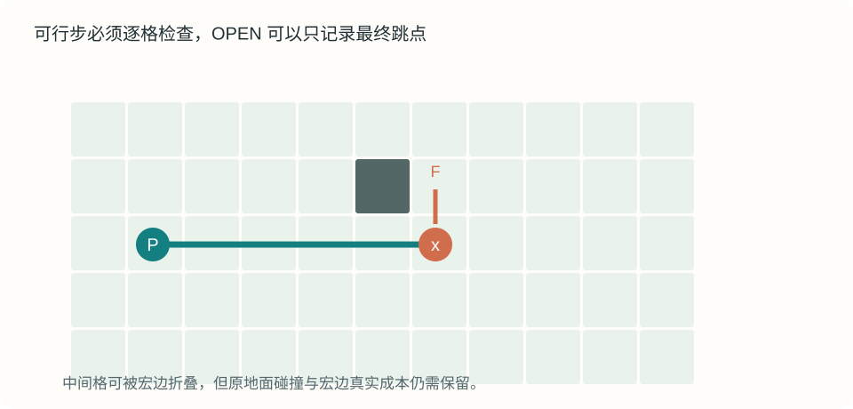
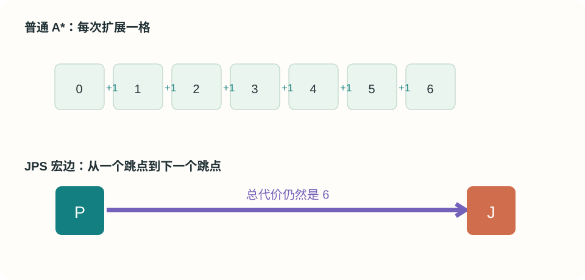

JPS：为什么跳过节点仍能寻找最短路径？
利用均匀成本网格的路径对称性，理解自然邻居、强制邻居、直线与对角跳跃，以及这种优化什么时候会失效。
空旷地图里，A* 为什么也会浪费搜索
考虑二维整数网格，从 (0,0) 走到 (3,2)，只允许上下左右各移动一格且每步成本相同。最短路必然包含三次水平移动与两次竖直移动，但它们的先后排列有 C(5,2)=10 种。十条路线长度完全相同，搜索器却可能重复考察多个对称组合。
Jump Point Search（JPS，Harabor 与 Grastien，2011）的核心是：对于满足特定网格和移动模型的 A*，只保留影响最优路径选择的关键转向/跳点。如果在一条开阔走廊里每个中间格子的继续方向毫无差别，就沿方向跳过中间格，而不是把每格都单独加入 OPEN。
GRID SYMMETRY · 10

自然邻居和强制邻居从哪里来
设 A* 当前到达 x，父节点为 p(x)。当上一段是向右的直线移动时，在均匀成本的开阔区域中，很多绕行方向都有一条不比“先经过 x 再绕行”更贵的等价路径，因此可以把它们从 x 的后继中剪掉，保留更自然的向右方向。
障碍物会打破这种对称性：如果上一格上方堵住，而当前格上方重新可走，试图从父节点先走侧方就会撞墙。于是当前格成为一个必须考虑转向的跳点；其侧向可走位置是被强制保留的候选邻居。
GRID SYMMETRY · 10

这种剪枝不只是“看到墙就往另一边走”，而是基于从父节点出发的替代最优路径是否存在的支配关系。原始 JPS 同时定义直线与对角运动的自然/强制邻居，两个方向规则并不相同。
直线 Jump：何时继续、何时停下
沿某个允许方向连续扫描：如果下一格是障碍或地图边界，则这个方向不能继续；如果到达目标，就返回目标；如果当前位置有强制邻居，就返回它作为跳点；否则继续。完整的八邻域 JPS 在沿对角方向跳跃时还会触发两个直线方向的递归扫描，避免错过被障碍打破的对称。
GRID SYMMETRY · 10

跳点之间的宏边表示经过中间多个真实网格格子。宏边本身不是机器人可以瞬移的操作，最后输出路径时仍要展开每一段，做碰撞、足迹与转向可行性检查。
斜向跳跃与不允许切角的区别
经典 JPS 常用于均匀地形成本的八邻域网格，轴向移动成本 1、对角移动成本 √2。这里“uniform-cost grid”并不是说所有八个方向必须同为 1，而是指相同类型动作在整个地图上不受地形加权影响。
尤其需要区分允许斜向切过障碍角点与不允许切角两套邻居可行性规则。斜走到 (r+1,c+1) 时，如果邻近的 (r+1,c) 或 (r,c+1) 被墙占据，某些几何足迹模型会认为斜线穿角不可行；不同版本 JPS 的剪枝/forced-neighbor 规则也随这一规定而变化，不能将一套实现直接套到另一套地图上。
工程提醒：原始论文中的网格搜索是在特定邻接与碰撞规则上证明的。机器人有真实半径、非完整约束或非均匀代价时，不应未经修改就宣称 JPS 保持最优与安全。
跳过 10 格，不等于只支付 1 格代价
假设一条跳跃从 (2,1) 沿水平方向走到 (2,7)，跨过 6 次轴向移动，其宏边成本必须是 6，而不是“有一条边所以权重等于 1”。对于对角步，成本按 √2 累积，通常采用 octile distance 作为相容的启发式下界。若用“跳跃边数”冒充几何路径成本，搜索结果就可能偏向跨度大的边，从而破坏原本的最短路含义。
GRID SYMMETRY · 10

这里优化的是搜索的表示和剪枝顺序，时间上仍有扫描代价。在障碍密集或没有长直通道的地图上，连续扫描可能带来额外开销，JPS 未必优于经过良好实现的 A*。
先实现一个可检验的直线跳点原语
为了避免把不完整算法伪装成真正的 JPS，下面的 Python 3.10+ 示例只实现四个轴向方向的直线 Jump 停止规则，并以已知的强制邻居小图做断言。它没有实现八邻域的对角递归、完整后继剪枝、优先队列主循环以及宏边路径恢复，因此不能直接声称是完整 JPS。
def jump_straight(grid, start, direction, goal):
"""只演示“直线跳跃的停止条件”，不是完整 JPS 规划器。
grid: 0 可行、1 障碍；方向只能是四个单位轴向向量。
返回 (落点, 原因, 行进格数) 或 (None, 'blocked', 格数)。
"""
rows, cols = len(grid), len(grid[0])
dr, dc = direction
if (dr, dc) not in ((0,1), (0,-1), (1,0), (-1,0)):
raise ValueError("Only cardinal directions are supported")
def free(pos):
r, c = pos
return (0 <= r < rows and 0 <= c < cols
and grid[r][c] == 0)
def has_forced_neighbor(pos):
r, c = pos
# 与当前运动方向垂直的两个侧向邻居
for side_r, side_c in ((dc, -dr), (-dc, dr)):
beside = (r+side_r, c+side_c)
behind_side = (r-dr+side_r, c-dc+side_c)
if free(beside) and not free(behind_side):
return True
return False
current = start
steps = 0
while True:
next_cell = (current[0]+dr, current[1]+dc)
if not free(next_cell):
return None, "blocked", steps
current = next_cell
steps += 1
if current == goal:
return current, "goal", steps
if has_forced_neighbor(current):
return current, "forced", steps
grid = [[0]*9 for _ in range(5)]
grid[1][2] = 1 # 走廊上方的一处障碍
assert jump_straight(grid, (2,1), (0,1), (2,8)) == (
(2,3), "forced", 2)
assert jump_straight(grid, (2,1), (0,1), (2,2)) == (
(2,2), "goal", 1)
grid[2][3] = 1
assert jump_straight(grid, (2,1), (0,1), (2,8)) == (
None, "blocked", 1)
print("straight jump stop conditions passed")单元断言分别覆盖：走廊上方障碍结束时出现 forced-neighbor，目标在前方时优先返回 goal，以及被实墙阻断时返回 None。将它升级为完整 JPS 需要先锁定斜角规则，构建 A* 主队列，正确累积宏边成本，并用大量已知最短成本与标准 A* 做交叉对照。
JPS 的能力边界与下一步测试
| 前提/条件 | 影响 | 不能做的假设 |
|---|---|---|
| 均匀移动代价 | 支撑对称剪枝 | 危险区代价随格变化时仍原样安全 |
| 八邻域动作 | 直线/对角规则相互协作 | 只有直线扫描就等于完整 JPS |
| 斜角穿越约定固定 | 决定对角边是否合法 | 不同实现可以互换 forced-neighbor 规则 |
| 正确宏边代价 | 保留与原网格相同目标函数 | 跨多少格都按一条边计 1 |
| 静态地图 | 可按当前障碍布局做对称剪枝 | 变动地图无需重新检验跳点 |
若要用于机器人，应先为障碍施加与足迹相容的碰撞规则，再定义合法邻居，最后检查 JPS 的剪枝证明是否适用。不仅测加速，更要对每组地图报告可达性一致、路径成本一致以及没有 corner-cutting。